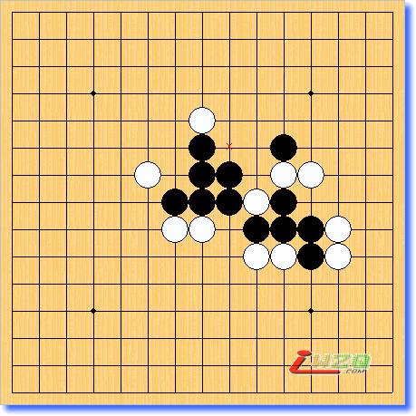

黑先如何胜?
首页
五子棋交流
#1 黑先如何胜? 作者：风の情深 发表时间：2007-7-19 12:47:12
第一次发贴!这是我在五子棋升段必读书中看到!难度不清楚!

h8h7h9g7g8f9i8j8h10h11j7k6k7j6l7m7l6m6k8l9k10k9i9
#2 Re:黑先如何胜? 作者：星尘 发表时间：2007-11-12 11:43:05
最左白上
#3 Re:黑先如何胜? 作者：好流氓 发表时间：2007-11-12 14:23:33
这个是白先如何胜吧
#4 Re:黑先如何胜? 作者：星尘 发表时间：2007-11-12 15:26:49
晕，果然是这样。没有数字，只看标题，以为黑先。